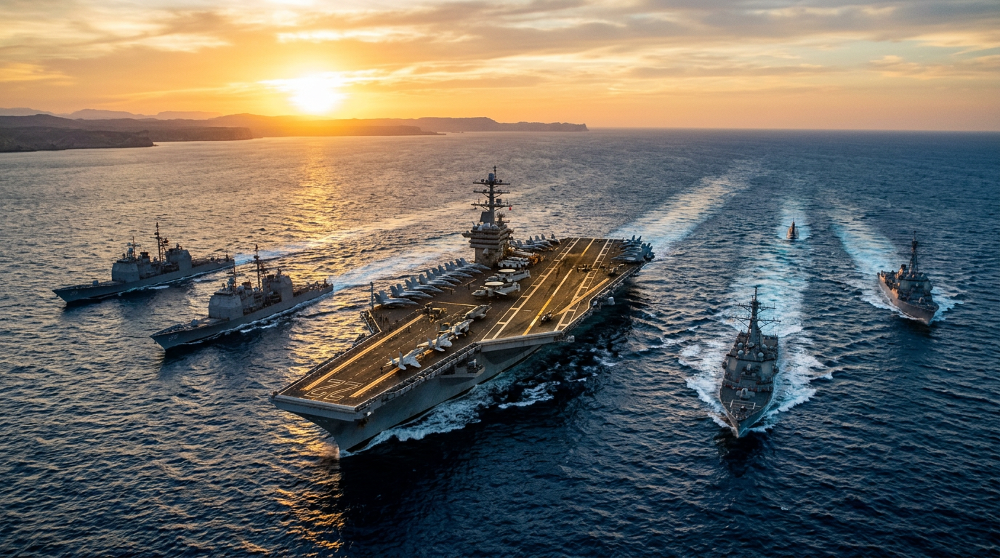
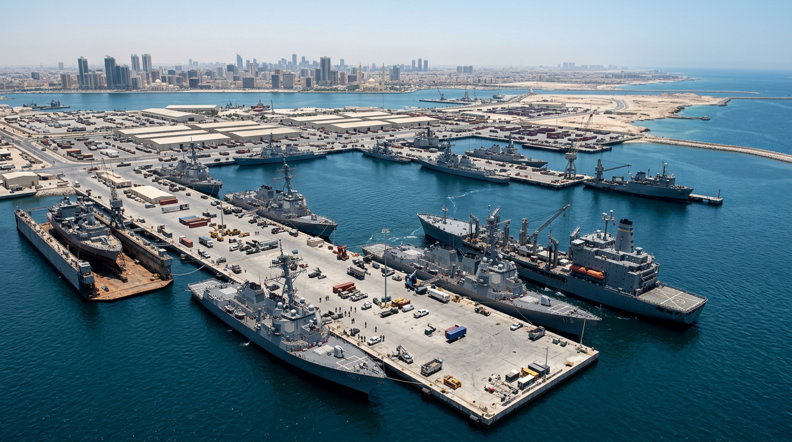
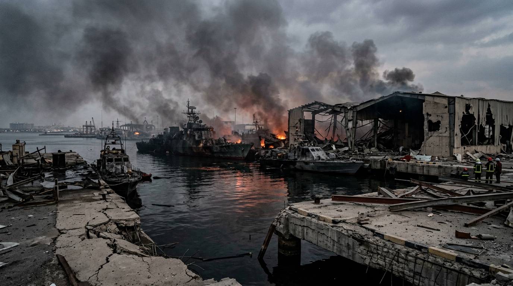

Mapping Naval Assets and Regional Bases

Goal: Identify and list current US and Iranian naval deployments, including carrier strike groups, surface combatants, and coastal defense installations in the Strait of Hormuz and the Indian Ocean. Research known base locations and logistics hubs. Save your findings to a file named 'workers/naval_assets.md'.
Result: The naval asset inventory for March 2026 confirms the US maintains a robust logistics network anchored by NSA Bahrain and support bases in Kuwait, Qatar, and the UAE, while utilizing the Gulf of Oman for carrier strike group operations. Conversely, the Iranian conventional navy has suffered critical damage, resulting in a shift toward asymmetric IRGC naval strategies using drones, mines, and coastal defense systems concentrated at Bandar Abbas, Kharg Island, and forward-deployed positions on the Tunbs and Abu Musa islands.
Key Findings:
- The US Fifth Fleet maintains operational command through NSA Bahrain and regional logistics hubs in Kuwait, Qatar, and the UAE.
- US carrier strike groups are currently positioned in the Gulf of Oman to avoid direct coastal defense threats while maintaining a monitoring presence.
- The Iranian conventional navy is largely combat ineffective, forcing a reliance on IRGC-led asymmetric warfare.
- Key Iranian naval capabilities are now centered on coastal defense installations, specifically shore-based missile sites and drone facilities at Kharg Island and disputed islands in the Strait.
Inventory of Naval Assets and
Regional Bases
(As of March 15, 2026)
This document provides a summary of naval assets and regional infrastructure related to the conflict in the Strait of Hormuz and the Indian Ocean.
US Naval Assets and Infrastructure
Regional Headquarters & Hubs
- Naval Support Activity (NSA) Bahrain: Headquarters for the US Fifth Fleet and US Naval Forces Central Command. Central command center for the Persian Gulf, Red Sea, Arabian Sea, and Indian Ocean.
- Al Udeid Air Base (Qatar): Forward headquarters for CENTCOM.
- Camp Arifjan (Kuwait): Primary logistics and sustainment hub.
- Ali Al Salem Air Base (Kuwait): Primary air-lift hub.
- Al Dhafra Air Base (UAE): Surveillance and air-power projection.
- Jebel Ali Port (UAE): Critical port for the sustainment and berthing of US warships.
Operational Posture
- Carrier Strike Groups: Operating primarily in the Gulf of Oman to maintain strike dominance and monitor the Strait while mitigating threats from Iranian coastal defenses.


.jpg)
## Iranian Naval Assets and Infrastructure
Current Status
- Conventional Navy: Largely combat ineffective following significant losses, including the *IRIS Dena* (sunk) and *IRIS Makran* (struck at port).
- IRGC Navy: The primary threat force, utilizing asymmetric warfare tactics (drones, mines, fast-attack boats).
Key Installations
- Bandar Abbas: Primary headquarters for the Iranian Navy (sustained extensive damage from coalition strikes).
- Kharg Island: Major oil export hub; heavily militarized with coastal missile launchers, radar systems, surveillance networks, and drone facilities.
- Strait Defenses: Distributed capabilities including drone swarms, mini-submarines, naval mines, and shore-based anti-ship missiles.
- Forward Positions: Disputed islands including Abu Musa and the Tunbs are utilized for positioning coastal defense assets.
.jpg)